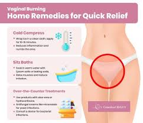
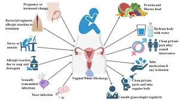

Effective Treatments for Vaginal Health Issues
There are various ways to treat vaginal health issues, including natural remedies, medical treatments, and lifestyle changes.
1. Medical Treatments
For bacterial and yeast infections, doctors often prescribe antifungal creams, antibiotics, or oral medications.
Example Treatments:
- Antifungal creams for yeast infections (e.g., Clotrimazole, Miconazole)
- Antibiotics for bacterial vaginosis (e.g., Metronidazole, Clindamycin)
- Prescription medications for chronic infections

2. Home Remedies
Natural remedies can help maintain vaginal health, but they should not replace medical treatment when necessary.
Home Treatment Tips:
- Eating probiotic-rich foods like yogurt
- Using coconut oil for vaginal dryness
- Drinking cranberry juice to prevent UTIs

3. Lifestyle Changes
Long-term vaginal health depends on daily habits and hygiene practices.
Recommended Habits:
- Avoiding tight, synthetic underwear
- Staying hydrated and eating a balanced diet
- Regular gynecological check-ups